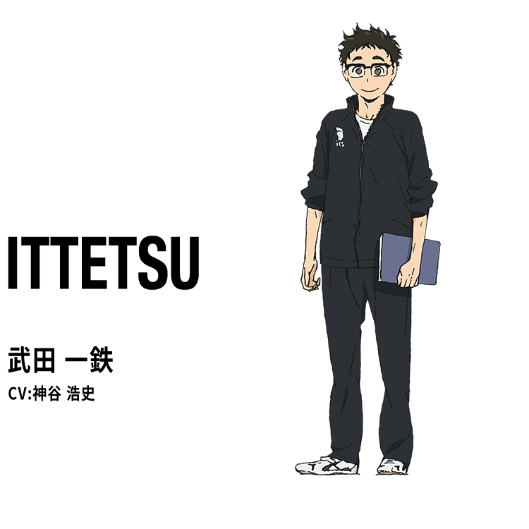

Escuela secundaria Karasuno
Perfil
Año Escolar Escuela secundaria Karasuno 1er año
Posición Setter
Altura 180,6cm
Peso Corporal 66,3kl
Cumpleaños 22 de Diciembre
Gobierna la corte con un sentido abrumador y, a veces, se le llama el "rey de la corte". Durante sus días de escuela secundaria, estuvo aislado en el equipo debido a su actitud estricta.

Perfil
Año Escolar Escuela secundaria Karasuno 1er año
Posición Bloqueador Central
Altura 162,8cm
Peso Corporal 51,9Kl
Cumpleaños 21 de Junio
Admirando al "pequeño gigante" que vio cuando era joven, llamó a las puertas de la escuela secundaria Karasuno. Tiene un poder explosivo excepcional, capacidad para saltar y una fuerte voluntad de nunca darse por vencido pase lo que pase.

Perfil
Año Escolar Escuela secundaria Karasuno 3er año
Posición Atacante de ala
Altura 176,8cm
Peso Corporal 70,1 Kl
Cumpleaños 31 de Diciembre
Capitán de Karasuno High School, es el sostén inquebrantable del equipo, tanto en términos de juego como de mentalidad. Aunque es un atacante, también es excelente en defensa y apoya a un equipo que tiende a inclinarse hacia el ataque. Sin embargo, da mucho miedo cuando se enoja.

Perfil
Año Escolar Escuela secundaria Karasuno 3er año
Posición Setter
Altura 174,3cm
Peso Corporal 63,5 Kl
Cumpleaños 13 de Junio
¡Un armador que reúne al equipo con Sawamura y se gana la confianza de los miembros del club incluso antes de que Hinata y Kageyama se inscriban! ! Tiene una personalidad muy amable y también es el coordinador del equipo.
Perfil
Año Escolar Escuela secundaria Karasuno 2do año
Posición Atacante de ala
Altura 177,2cm
Peso Corporal 68,8 Kl
Cumpleaños 3 de Marzo
¡El orgulloso capitán de Karasuno High School, que juega con muchas agallas! ! Aunque parece aterrador, tiene un fuerte sentido del deber y compasión, y es un hermano mayor afectuoso.
Perfil
Año Escolar Escuela secundaria Karasuno 3er año
Posición Atacante de ala
Altura 184,7cm
Peso Corporal 75,2 Kl
Cumpleaños 1 de Enero
Generalmente tímido y torpe. Sin embargo, una vez en la cancha, es un as de Karasuno de buen corazón que puede golpear cualquier pelota con un poder abrumador. !

Perfil
Año Escolar Escuela secundaria Karasuno 2do año
Posición Atacante de ala
Altura 159,3cm
Peso Corporal 51,1 Kl
Cumpleaños 10 de Octubre
Aunque es el miembro más pequeño del equipo, se confía absolutamente en él en la cancha y es verdaderamente el "guardián de Karasuno". Durante los partidos, anima fuertemente a los miembros de Karasuno desde atras de la cancha.

Perfil
Año Escolar Escuela secundaria Karasuno 1er año
Posición Bloqueador central
Altura 188,3cm
Peso Corporal 68,4 Kl
Cumpleaños 27 de Septiembre
Un bloqueador inteligente que se destaca entre los estudiantes de primer año de la escuela secundaria Karasuno, que tienen una personalidad con visión de futuro. También tiene un lado cínico y a veces choca con Hinata y Kageyama.
Perfil
Año Escolar Escuela secundaria Karasuno 1er año
Posición Bloqueador central
Altura 179,5cm
Peso Corporal 63,0 Kl
Cumpleaños 10 de Noviembre
Aunque no es llamativo, es un bloqueador que practica constantemente con sus amigos. A menudo pasa tiempo con Tsukishima y la palabra que más pronuncia durante el día probablemente sea "Tsukki".
Perfil
Año Escolar Escuela secundaria Karasuno 2do año
Posición Atacante de ala
Altura 175,4cm
Peso Corporal 66,4 Kl
Cumpleaños 26 de Diciembre
Como sugiere su nombre, es el héroe anónimo de Karasuno. Aunque no es llamativo, puede manejar todo, desde el ataque hasta la defensa con facilidad.

Perfil
Año Escolar Escuela secundaria Karasuno 3er año
Posición Gerente
Altura 166,2cm
Peso Corporal 51,4 Kl
Cumpleaños 6 de Enero
¡Una flor que florece en el club de voleibol Karasuno lleno de hombres! ! Incluso se habla de su belleza en otras escuelas. Tiene una personalidad muy fría y antipática, pero Tanaka y Nishinoya parecen estar contentos con eso.
Perfil
Año Escolar Escuela secundaria Karasuno 1er año
Posición Gerente
Altura 149,7cm
Peso Corporal 42,5 Kl
Cumpleaños 4 de Septiembre
Un estudiante de primer año tímido y tímido en la escuela secundaria Karasuno. Shimizu lo invita a convertirse en gerente y él se presenta en el Club de Voleibol Karasuno.

Perfil
Edad 29 años
Cargo Literatura moderna
Altura 166,5cm
Peso Corporal 59,4 Kl
Cumpleaños 10 de Enero
Asesor y directivo del Club de Voleibol Karasuno. Aunque no tiene experiencia en voleibol, hace todo lo posible para apoyar a Karasuno en otras áreas además de la orientación técnica. El tema a cargo es la literatura moderna. Quizás por eso la elección de palabras resulta un poco poética.
Perfil
Profesión Sucesor de Sakanoshita Shoten
Edad 26 años
Altura 178,2cm
Peso Corporal 72,2 Kl
Cumpleaños 5 de Abril
Heredero de Sakanoshita Shoten, una tienda general que sirve al Club de Voleibol Karasuno. Después de graduarse de la universidad, jugó en el equipo de voleibol local. Nombre: Como nieto del entrenador Karasuno, entrena el club de voleibol de Karasuno High School.
Escuela secundaria Nekoma
Perfil
Año Escolar Escuela Secundaria Nekoma 2do año
Posición Setter
Altura 169,2cm
Peso Corporal 58,3 Kl
Cumpleaños 16 de Octubre
El colocador correcto de Nekoma. Aunque es un creador de juegos, tiene una personalidad tímida. La cabeza del pudín es distintiva.
Perfil
Año Escolar Escuela Secundaria Nekoma 3er año
Posición Bloqueador Central
Altura 187,7cm
Peso Corporal 75,3 Kl
Cumpleaños 17 de Noviembre
Capitán del equipo de voleibol de Nekoma High School. Aunque tiene una personalidad tranquila, es un estratega tranquilo y sereno. Su marca registrada es el peinado único que obtuvo debido a su hábito de dormir.
Perfil
Año Escolar Escuela Secundaria Nekoma 3er año
Posición Libero
Altura 165,2cm
Peso Corporal 60,2 Kl
Cumpleaños 8 de Agosto
Libero en la escuela secundaria Nekoma. Tiene tanto talento que ha levantado las púas del orgulloso Toho de Karasuno muchas veces, lo que hizo que Nishinoya dijera que es "increíblemente talentoso". Generalmente es una persona amable y, al igual que Sugawara de Karasuno, es un coordinador adulto dentro del equipo.
Perfil
Año Escolar Escuela Secundaria Nekoma 1er año
Posición Bloqueador Central
Altura 194,3cm
Peso Corporal 79,7 Kl
Cumpleaños 30 de Octubre
El bloqueador central del primer año de Nekoma. Mide más de 190 cm de altura y tiene unos distintivos ojos verdes. Mitad rusa y mitad japonesa.
Perfil
Año Escolar Escuela Secundaria Nekoma 3er año
Posición Atacante de ala
Altura 176,5cm
Peso Corporal 68,9 Kl
Cumpleaños 8 de Abril
Perfil
Año Escolar Escuela Secundaria Nekoma 2do año
Posición Atacante de ala
Altura 176,7cm
Peso Corporal 69,1 Kl
Cumpleaños 22 de Febrero
Perfil
Año Escolar Escuela Secundaria Nekoma 2do año
Posición Atacante de ala
Altura 178,3cm
Peso Corporal 68,3 Kl
Cumpleaños 29 de Septiembre
Perfil
Año Escolar Escuela Secundaria Nekoma 1er año
Posición Atacante de ala
Altura 185,3cm
Peso Corporal 74,3 Kl
Cumpleaños 1 de Noviembre
Perfil
Año Escolar Escuela Secundaria Nekoma 1er año
Posición líbero
Altura 162,5cm
Peso Corporal 55,3 Kl
Cumpleaños 16 de Diciembre
Perfil
Año Escolar Escuela Secundaria Nekoma 1er año
Posición Setter
Altura 172,2cm
Peso Corporal 59,2 Kl
Cumpleaños 14 de Enero
Perfil
Posición Director
Altura 169 cm
Peso Corporal 65,3 Kl
Cumpleaños 8 de Abril
Perfil
Posición Entrenador
Altura 187,7cm
Peso Corporal 75,3 Kl
Cumpleaños 20 de Marzo
Escuela secundaria Aoba Josai
Perfil
Año Escolar Escuela Secundaria Aoba Josai 3er año
Posición Setter
Altura 184,3cm
Peso Corporal 72,2 Kl
Cumpleaños 20 de Julio
Es el capitán y armador principal del equipo de voleibol del Aoba Johsai High (Seijoh). Conocido por su carisma, habilidades excepcionales como setter y su fuerte liderazgo.
Perfil
Año Escolar Escuela Secundaria Aoba Josai 3er año
Posición Atacante de ala
Altura 179,3cm
Peso Corporal 70,2 Kl
Cumpleaños 10 de Junio
Perfil
Año Escolar Escuela Secundaria Aoba Josai 3er año
Posición Atacante de ala
Altura 184,7cm
Peso Corporal 72,0 Kl
Cumpleaños 27 de Enero
Perfil
Año Escolar Escuela Secundaria Aoba Josai 3er año
Posición Bloqueador central
Altura 187,9cm
Peso Corporal 73,8 Kl
Cumpleaños 1 de Marzo
Perfil
Año Escolar Escuela Secundaria Aoba Josai 2do año
Posición Líbero
Altura 171,2cm
Peso Corporal 62,5 Kl
Cumpleaños 3 de Abril
Perfil
Año Escolar Escuela Secundaria Aoba Josai 2do año
Posición Setter
Altura 181,9cm
Peso Corporal 69,0 Kl
Cumpleaños 1 de Marzo
Perfil
Año Escolar Escuela Secundaria Aoba Josai 1er año
Posición Bloqueador Central
Altura 189,2cm
Peso Corporal 74,3 Kl
Cumpleaños 6 de Junio
Perfil
Año Escolar Escuela Secundaria Aoba Josai 1er año
Posición Atacante de ala
Altura 182,8cm
Peso Corporal 66,1 Kl
Cumpleaños 25 de Marzo
Perfil
Año Escolar Escuela Secundaria Aoba Josai 2do año
Posición Atacante de ala
Altura 178,8cm
Peso Corporal 70,8 Kl
Cumpleaños 7 de Diciembre
Aoba Josai atacante lateral de segundo año. Dejó el club debido a cierto problema, pero regresó de las preliminares de primavera de la escuela secundaria. Dado que es del tipo que actúa por instinto, no tiene ninguna coordinación.
Escuela secundaria Técnica Date
Perfil
Año Escolar Escuela Secundaria Tecnica 2do año
Posición Bloqueador Central
Altura 191,8cm
Peso Corporal 88,2 Kl
Cumpleaños 13 de Agosto
¡Un MB (bloqueador central) con un poderoso bloqueo adelantado que aprovecha sus reflejos! Debido a su falta de cejas y ojos agudos, sumado a su físico, quienes lo rodean lo temen.
Perfil
Año Escolar Escuela Secundaria Tecnica 3er año
Posición Atacante de ala
Altura 184,2cm
Peso Corporal 71,5 Kl
Cumpleaños 10 de Noviembre
¡Un talentoso WS (Wing Spiker) que bloquea los ataques del oponente junto con Aone! Tiene una expresión provocativa con las comisuras de la boca levantadas y, debido a que hace comentarios ligeros tanto sobre amigos como sobre enemigos, sus superiores lo consideran un joven descarado.
Perfil
Año Escolar Escuela Secundaria Tecnica 1er año
Posición Setter
Altura 191,5cm
Peso Corporal 80,2 Kl
Cumpleaños 9 de Julio
Un setter grande de más de 190 cm de altura. Aunque no tiene experiencia y su juego es rudo, hace sentir su presencia con su gran habilidad física. Aunque es honesto, también es demasiado serio e inflexible.
Escuela secundaria Inarizaki
Perfil
Año Escolar Escuela Secundaria Inarizaki 2do año
Posición Setter
Altura 183,6cm
Peso 75,2 Kl
Cumplaños 5 de Octubre
Es estudiante de segundo año y ocupa el puesto de colocador (setter), siendo considerado uno de los mejores en Japón, además de ser parte de la Selección Juvenil Nacional.
Perfil
Año Escolar Escuela Secundaria Inarizaki 2do año
Posición Atacante de ala
Altura 183,8cm
Peso 73,5 Kl
Cumplaños 5 de Octubre
Es el hermano gemelo de Atsumu Miya y juega como atacante opuesto (opposite hitter). Aunque a menudo está a la sombra de su hermano debido al rol de colocador estrella de Atsumu, Osamu es un jugador excepcional por derecho propio, destacándose por su consistencia y habilidad técnica.
Perfil
Año Escolar Escuela Secundaria Inarizaki 3er año
Posición Atacante de ala
Altura 175,2cm
Cumplaños 5 de Julio
Perfil
Año Escolar Escuela Secundaria Inarizaki 2do año
Posición Bloqueador Central
Altura 185,7cm
Cumplaños 25 de Enero
Perfil
Año Escolar Escuela Secundaria Inarizaki 2do año
Posición Atacante de ala
Altura 184,7cm
Cumplaños 4 de Abril
Perfil
Año Escolar Escuela Secundaria Inarizaki 3er año
Posición Líbero
Altura 174,2cm
Cumplaños 12 de Abril
Perfil
Año Escolar Escuela Secundaria Inarizaki 3er año
Posición Bloqueador Central
Altura 191,5cm
Cumplaños 17 de Febrero
Perfil
Año Escolar Escuela Secundaria Inarizaki 2do año
Posición Atacante de ala
Altura 180,3cm
Cumplaños 21 de Agosto